está em perigo.
o nosso lar
e as nossas crias sofrem cada vez mais.
o que nos ameaça
e como nos podes ajudar.
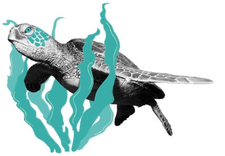

Poluição.


O que nos prejudica.


Captura acidental
em redes de pesca.
Todos os anos, centenas de milhares de tartarugas marinhas são capturadas acidentalmente em redes
de
pesca, dedicadas à pesca de outros animais.


Aquecimento Global.
Todos os estados da vida das tartarugas marinhas são afetados por condições ambientais,
como a
temperatura, até mesmo o sexo da tartaruga bebé. Temperaturas quentes incomuns causadas
por alterações
climáticas têm vindo a perturbar
as percentagens habituais, resultando na chocagem de menos machos.
Para
além disto, o aquecimento global pode ainda causar subida do nível médio
do mar, destruindo praias
cruciais à chocagem
dos ovos, bem como os seus ninhos.


Tráfico de tartarugas
e carapaças.
A captura de tartarugas e tráfico em mercados domésticos e internacionais encontra-se proibida
mundialmente, no entanto continua a verificar-se
em todo mundo, sendo muito requisitadas pelas
suas
carapaças.

Consumo ilegal de ovos e carne das tartarugas.
A carne e ovos de tartaruga ainda são uma forma
de alimento e de enriquecimento para muita gente
em
todo
o mundo. Para além disto, algumas pessoas matam tartarugas para remédios e cerimónias religiosas. Todos os
anos, dezenas de milhares
de tartarugas são assassinadas destas formas, devastando populações de
espécies
que já estão
em perigo de extinção.

Desenvolvimento costeiro.
Sendo as tartarugas dependentes de praias para porem os seus ovos, a construção descontrolada
na
costa,
a sobrepopulação nas praias e outras atividades humanas têm vindo a destruir
e a perturbar o processo
de
chocagem dos ovos.
A luz das estradas desorienta as tartarugas bebés
no seu caminho para o mar,
podendo
estas falecer por desidratação, predação ou mesmo
por atropelamento nas marginais, e a construção
costeira
compacta a areia circundante, impedindo
as fêmeas de pôr os seus ovos na areia. Para além disto,
locais de
alimento das tartarugas tais como
corais e algas têm vindo a ser cada vez mais perturbados por
atividades
costeiras, dificultando assim a sua sobrevivência.


Poluição.
Para além da poluição por parte dos plásticos,
a poluição marinha com químicos pode ser prejudicial
para
estes animais. Quando a poluição entra no mar, contamina e mata animais que servem de comida
às
tartarugas. Derrames de óleo, poluição costeira
e fertilizantes contribuem todos para a poluição
da água.
À medida que as toxinas são libertadas
dos poluentes, ficam mais concentradas.
Como resultado,
estas
partículas mais toxicas tornam se comida para muitos seres da "food chain", incluindo as tartarugas.


Plástico.
Recorrentemente, as tartarugas marinhas confundem sacos de plástico por alforrecas, comendo-as,
o
que
pode levar à sua morte. Para além disso, consomem também outros tipos de plástico acidentalmente, como
palhinhas, microplásticos, etc. Pesquisas mostram que uma tartaruga tem 22%
de probabilidade de
morrer se
ingerir
apenas
um pedaço de plástico uma vez que o plástico pode cortar órgãos e fazer feridas, ou até mesmo
entupir
os
intestinos.
Conhece-nos melhor.
Fica a conhecer melhor as espécies
de tartarugas que podes encontrar em Portugal.
de tartarugas que podes encontrar em Portugal.
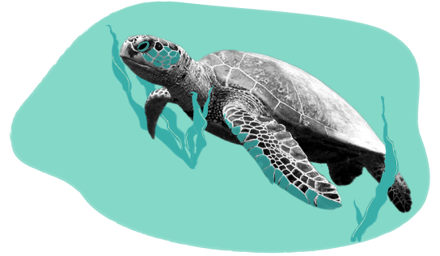
Tartaruga Comum
Caretta Caretta
e vivem entre os 47 e 67 anos.

Tamanho
70cm a 90cm
Peso
80kg a 200kg
Risco
Vulnerável
Ameaças
Caça Furtiva
Pilhagem de ovos
Equipamento
de pesca à deriva
Pilhagem de ovos
Equipamento
de pesca à deriva
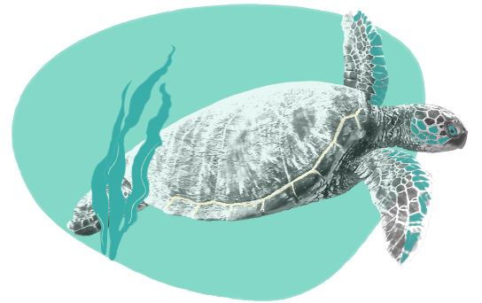
Tartaruga Verde
Chelonia mydas
de invertebrados em jovens e de ervas marinhas em adultas. Migram os oceanos durante cerca
de 80 anos.
Tamanho
150cm
Peso
68kg a 190kg
Risco
Ameaçada
Ameaças
Colisões com barcos
Pesca acidental
Caça furtiva
Pilhagem de ovos
Pesca acidental
Caça furtiva
Pilhagem de ovos
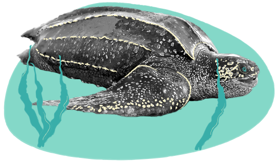
Tartaruga de Couro
Dermochelys coriacea
e Oriental. O nome advém da sua carapaça.
Tamanho
200cm
Peso
500kg
Risco
Vulnerável
Ameaças
Poluição luminosa
Pesca acidental
Pilhagem de ovos
Pesca acidental
Pilhagem de ovos
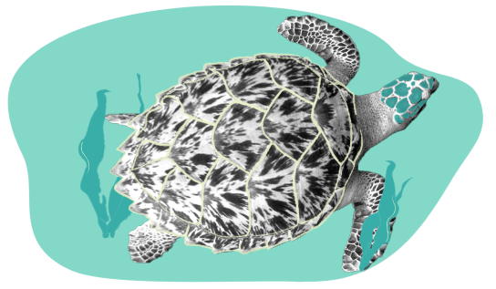
Tartaruga de Escamas
Eretmochelys imbricata
aos recifes de coral e lagoas a sua casa. Possui
um bico, que usa para alcançar alimento em fendas, dando-lhe o nome “Hawksbill sea turtle”.
Tamanho
60cm a 100cm
Peso
73kg a 100kg
Risco
Criticamente
em perigo
em perigo
Ameaças
Caça furtiva
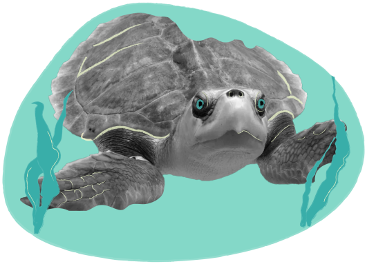
Tartaruga de Kemp
Lepidochelys kempii
Tamanho
58cm a 70cm
Peso
36kg a 45kg
Risco
Criticamente
em perigo
em perigo
Ameaças
Destruição
de habitat
Poluição
Pesca acidental
de habitat
Poluição
Pesca acidental
Cuida de nós.
Dicas simples que podes adotar nos teus dias
e que certamente irão contribuir para a sobrevivência das tartarugas.
e que certamente irão contribuir para a sobrevivência das tartarugas.
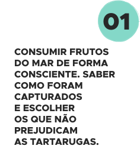
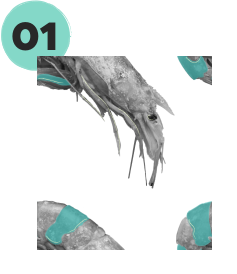
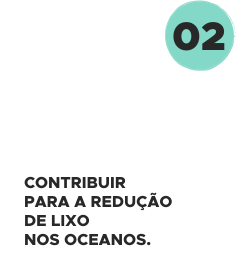
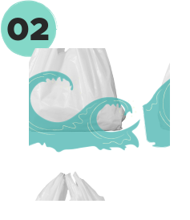
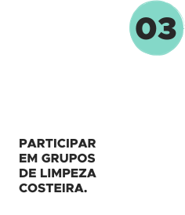
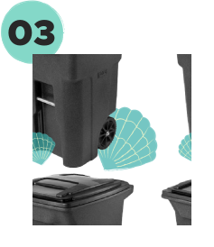
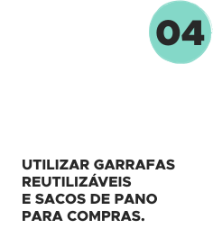
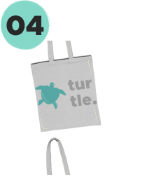
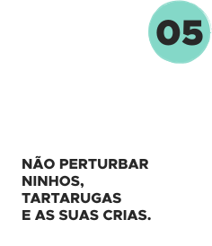
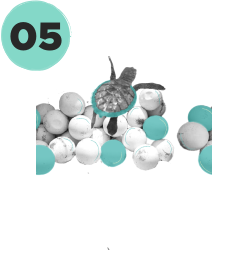
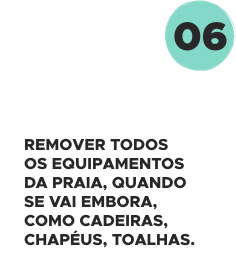
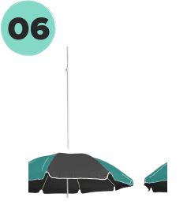
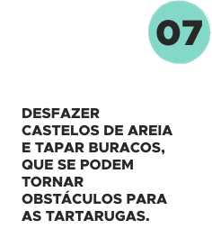
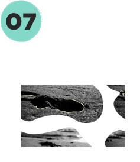
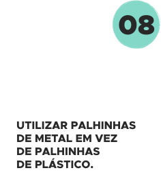
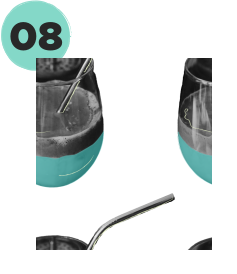
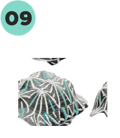
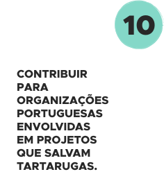
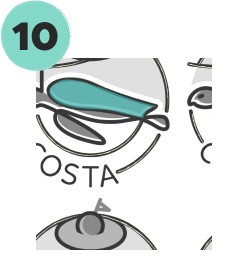
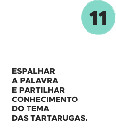
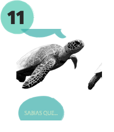
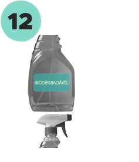
Colabora com os projetos que nos protegem.
Programa Tatô — Oceanário
de Lisboa
de Lisboa
Incialmente um projeto, tornou-se em 2018 uma ONG internacional, contando agora
com
inúmeras associações nacionais e internacionais a seu lado, sendo uma delas
o Oceanário de Lisboa.
A sua estratégia passa por monitorizar e proteger
as tartarugas marinhas, tal como sensibilizar, educar
e envolver as comunidades locais nos seus esforços.
o Oceanário de Lisboa.
A sua estratégia passa por monitorizar e proteger
as tartarugas marinhas, tal como sensibilizar, educar
e envolver as comunidades locais nos seus esforços.
Formas de contribuir e apoiar
Donativos.
Voluntariado.
Turismo sustentável/Turtle watching.
Voluntariado.
Turismo sustentável/Turtle watching.


Projeto Costa — Consolidating Sea Turtle Conservation in the Azores
O objetivo deste projeto, criado nos Açores,
é a conservação das tartarugas marinhas,
através da preservação do seu habitat no oceano Atlântico.
Isto é feito através da recolha de dados sobre capturas acidentais, recolha de dados biológicos e demográficos, ensinar boas práticas de manuseamento
para os pescadores e educar e envolver as comunidades locais e turistas para ações de conservação da espécie.
é a conservação das tartarugas marinhas,
através da preservação do seu habitat no oceano Atlântico.
Isto é feito através da recolha de dados sobre capturas acidentais, recolha de dados biológicos e demográficos, ensinar boas práticas de manuseamento
para os pescadores e educar e envolver as comunidades locais e turistas para ações de conservação da espécie.

Marine Megafauna Foundation — Zoomarine
Esta fundação tem como objetivo a proteção da fauna marinha do nosso planeta;
desde
pesquisa pioneira, educação e soluções de conservação sustentáveis, a Marine Megafauna Foundation
pretende
criar um mundo onde a vida marinha e os seres humanos possam prosperar juntos.
Formas de contribuir e apoiar
Donativos.
Comprar itens da fundação nas lojas Zoomarine.
Visitar o Zoomarine — Parte dos custos revertem para a fundação.
Comprar itens da fundação nas lojas Zoomarine.
Visitar o Zoomarine — Parte dos custos revertem para a fundação.

Projeto TAMAR — Brasil (Protocolos com Zoomarine)
O projeto TAMAR começou como uma iniciativa
para a conservação de espécies de tartarugas marinhas encontradas no litoral brasileiro; com 24 bases espalhadas pelo litoral brasileiro, a fundação realiza conservação
e pesquisa aplicada de tartarugas como também
a educação ambiental das populações e o seu desenvolvimento sustentável, alternativo à caça destas espécies.
para a conservação de espécies de tartarugas marinhas encontradas no litoral brasileiro; com 24 bases espalhadas pelo litoral brasileiro, a fundação realiza conservação
e pesquisa aplicada de tartarugas como também
a educação ambiental das populações e o seu desenvolvimento sustentável, alternativo à caça destas espécies.